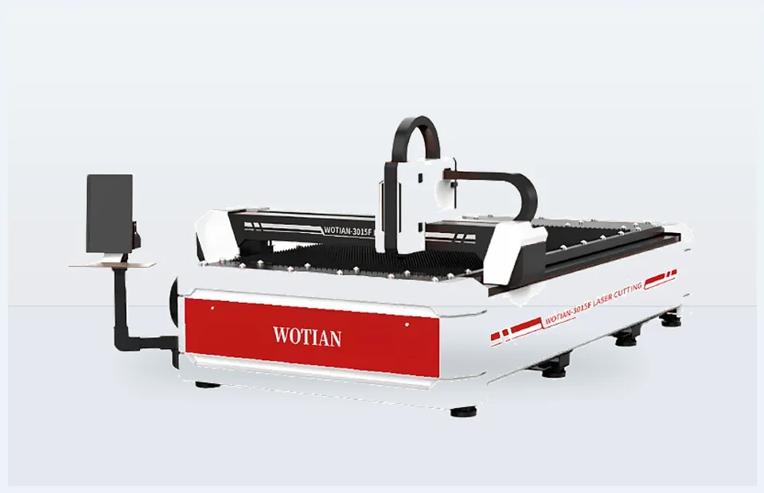

Fiber Laser Cutting Machine
Fiber laser cutting equipment for clean, burr-free cutting of carbon steel, stainless steel, aluminum, and copper sheets.
Send thickness, working length, and target product. WOTIAN will recommend a practical model configuration.

Why overseas buyers choose this series
- Clean cuts with tight tolerances for complex part geometry.
- Intelligent control system supports high-speed automated cutting.
- Processes carbon steel, stainless steel, aluminum, copper, and other metal sheets.
- Stable frame and core components support long-term performance.
- Power and table sizes can be matched to production requirements.
Typical configuration range
| Laser power | 1500-20000 W, model dependent |
|---|---|
| Machining area | 3000x1500 to 6000x2500 mm |
| X/Y precision | +/-0.03 mm/m |
| Maximum speed | 80 m/min |
| Models | WT-3015F, WT-4015F, WT-4020F, WT-6025F |
Final specifications depend on selected model and customization requirements.
How to choose the right Fiber Laser Cutting Machine
- Confirm material type, maximum thickness, and maximum sheet length.
- Share target products, drawings, or sample photos so the machine stroke, tooling, and controller can be matched.
- Tell us your daily output target and whether you prefer economical, high-precision, or automated production.
- Confirm local voltage, destination country, preferred controller language, and any OEM branding requirements.
Suitable production uses
- Stainless steel and carbon steel sheet-metal fabrication.
- Sheet-metal factories, metal sign shops, machinery parts suppliers, cabinet factories, and custom fabrication plants.
- OEM production lines, job shops, and distributor project sales.
Send these details for faster selection
- Material type, thickness, and maximum sheet length.
- Target product drawings, photos, or bending samples.
- Daily capacity target and local voltage.
- Destination country, port, and preferred delivery schedule.
Ask for a matched WT-F Series proposal
Use this page as a Google Ads landing page: buyers can review the series, see the practical advantages, and contact WOTIAN directly.
Send your material, thickness, and target product. Get a matched machine proposal.
WOTIAN can quote standard models or customized configurations for overseas distributors, manufacturers, and project buyers.
FAQ
Can WOTIAN customize machine size or configuration?
Yes. The catalog states special model customization is available. Buyers can request tonnage, bending length, control system, tooling, voltage, color, and packaging options.
What information should I send for a quotation?
Send material type, thickness, sheet length, target products, daily output, required accuracy, destination country, and any preferred controller or tooling brand.
Can the machines be prepared for export shipment?
Yes. The site highlights export packaging, machine protection, documentation support, and shipment coordination for overseas buyers.
Which press brake should I choose?
Choose CNC press brakes for higher accuracy and repeatability, NC press brakes for economical general bending, electric servo models for clean compact precision work, and tandem machines for extra-long parts.
Can you customize voltage and controller language?
Yes. Voltage, controller language, safety configuration, tooling, and machine color can be discussed before production.
Do you support OEM branding?
Yes. OEM support is available for distributors and project buyers who need customized appearance, nameplates, or market-specific configuration.
What is the usual quotation response process?
Send the material, thickness, working length, product drawing or photo, destination country, and target quantity. WOTIAN can recommend a suitable model and quotation scope.
Do you provide installation support?
WOTIAN can support overseas buyers with operation guidance, machine documentation, remote communication, and preparation details before shipment.